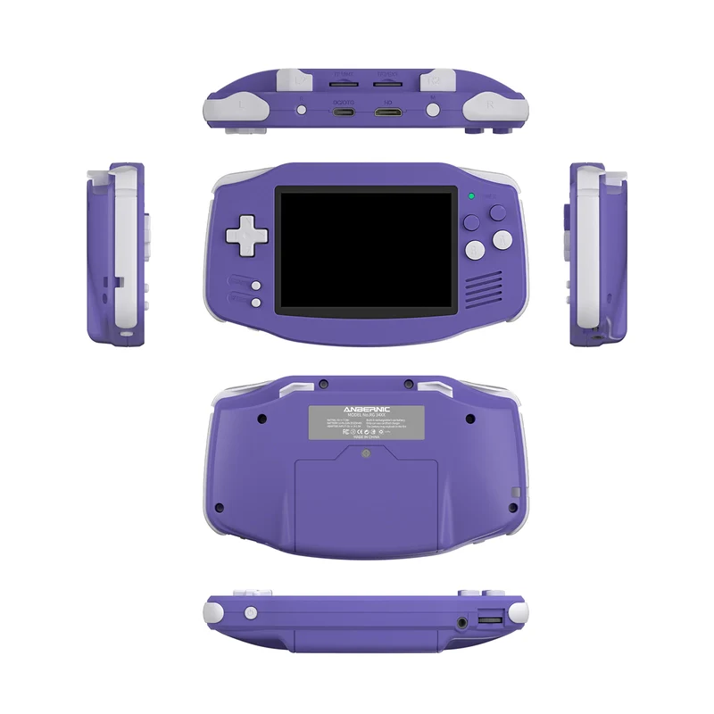

ANBERNIC RG 34XX

La ANBERNIC RG34XX és una consola portàtil retro compacta i amb un disseny que evoca la nostàlgia de les consoles clàssiques horitzontals. Aquesta consola està pensada per oferir una experiència de joc retro senzilla i accessible, ideal per a aquells que volen gaudir dels seus jocs preferits de la infància sense complicacions. Equipada amb un processador Allwinner H313, la RG34XX és capaç d'emular una àmplia selecció de sistemes clàssics, incloent-hi plataformes de 8 i 16 bits com NES, SNES, Sega Genesis/Mega Drive, Game Boy, Game Boy Color i Game Boy Advance, així com alguns sistemes arcade i altres consoles portàtils anteriors.